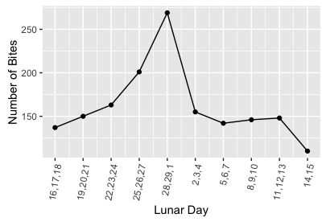

Problem 2 (Section 9.11 Problem 39)¶
Thereisagreatdealoffolkloreabouttheeffectsofthefullmoononhumansand other animals. Do animals bite humans more during a full moon? In an attempt to study this question, Bhattacharjee et al. (2000) collected data on admissions to a medical facility for treatment of bites by animals: cats, rats, horses, and dogs. \(95\%\) of the bites were by man’s best friend, the dog. The lunar cycle was divided into 10 periods, and the number of bites in each period is shown in the following table. Day 29 is the full moon. Is there a temporal trend in the incidence of bites?
| Lunar Day | 16-18 | 19-21 | 22-24 | 25-27 | 28-1 | 2- 4 | 5- 7 | 8-10 | 11-13 | 14-15 |
|---|---|---|---|---|---|---|---|---|---|---|
| Number of Bites | 137 | 150 | 163 | 201 | 269 | 155 | 142 | 146 | 148 | 110 |
Solution:
From the figure above, we can conclude that animal bite human more during the full moon days.